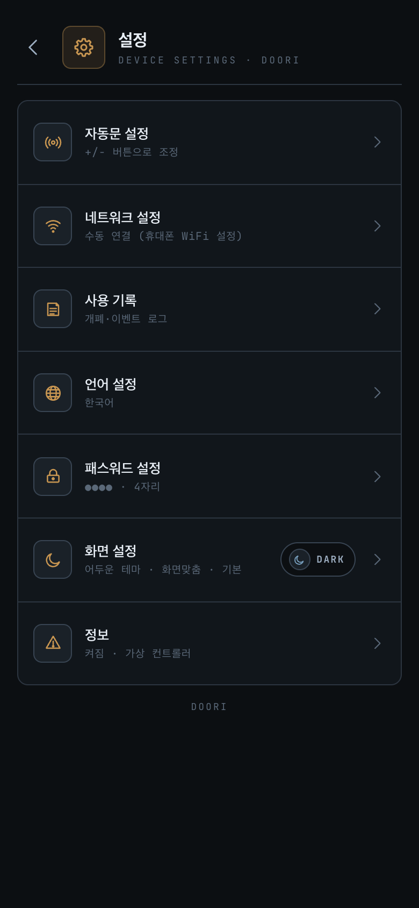
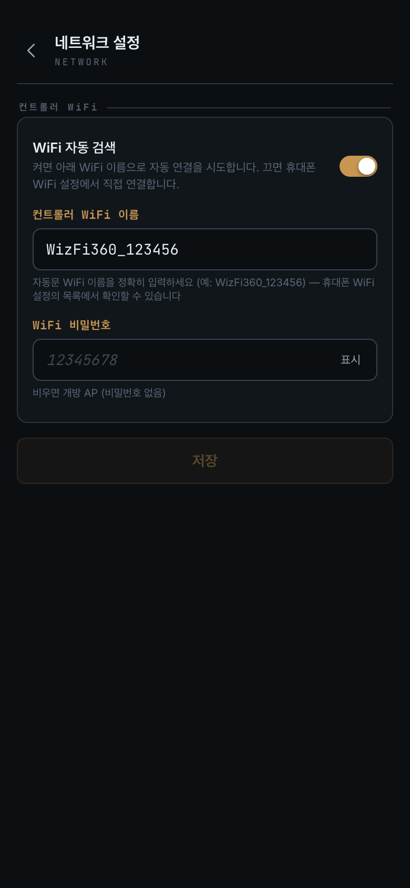
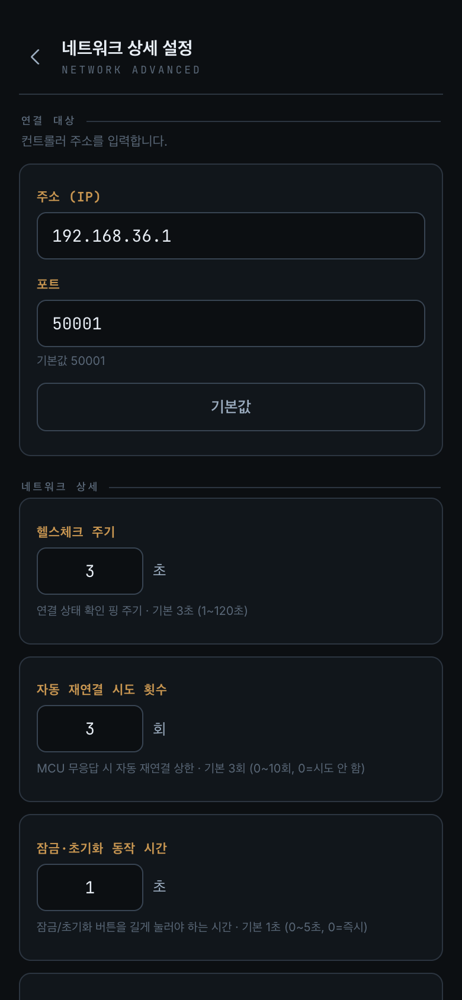
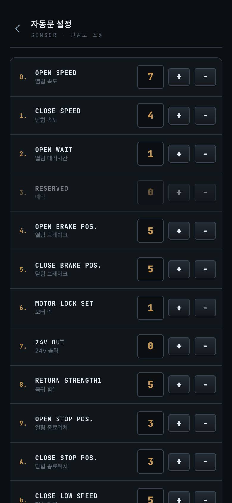
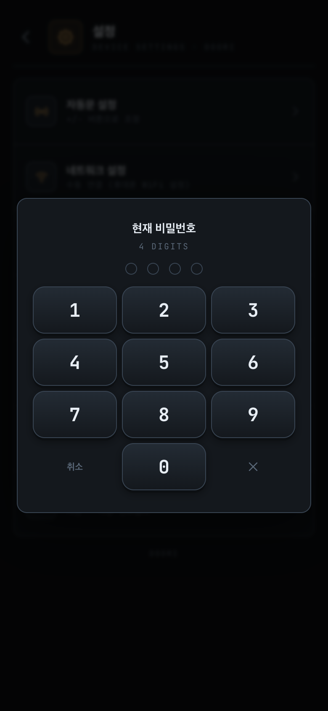
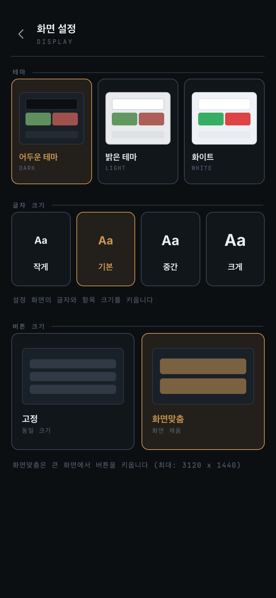
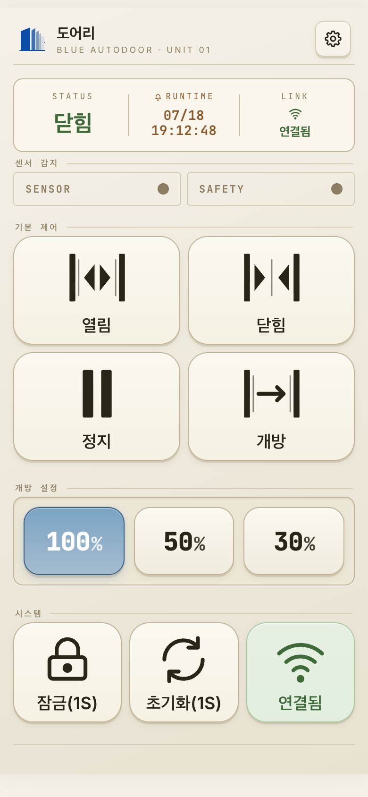
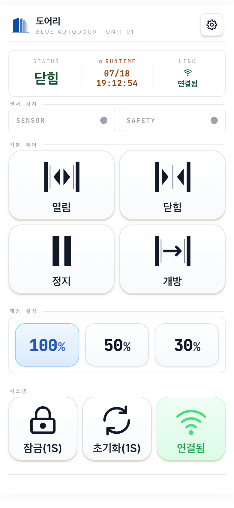
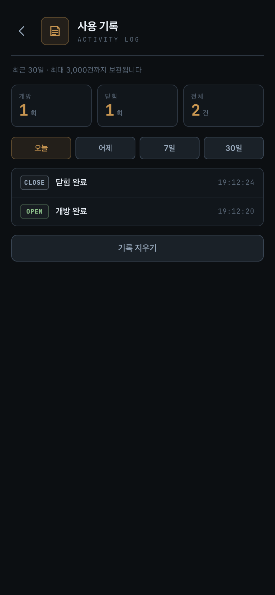

도어리 (DOORI) — 지원 · 사용자 매뉴얼
개인정보 처리방침: yongkyoku.github.io/doori-privacy
1. 개요
도어리 앱은 스마트폰에서 자동문 컨트롤러(MCU)에 직접 연결해 문을 여닫고 상태를 확인하는 앱입니다.
- 통신 방식 — 같은 WiFi 네트워크 안에서 컨트롤러의 IP 주소(기본 포트 50001)로 직접 연결합니다.
- 로컬 전용 — 자동문의 WiFi(AP)에 연결된 상태에서만 동작합니다. 모바일 데이터·외부망 접속은 지원하지 않습니다.
- 다국어 — 한국어 · English · 中文 · 日本語.
- 화면 — 테마(어두운/밝은/화이트) · 글자 크기(작게/기본/중간/크게, 설정 화면 전용) · 버튼 크기(고정/화면맞춤).
2. 시작하기
지원 환경 (호환 기기)
| 구분 | 지원 범위 |
|---|---|
| 안드로이드 | Android 5.1 이상 (2015년 이후 대부분의 기기) |
| 아이폰 | iOS 13 이상 — iPhone 6s · SE(1세대) 이후 최신 기종까지 |
| 아이패드 | 지원하지 않습니다(아이폰 전용 앱) |
| 공통 | 자동문 컨트롤러와 같은 WiFi에 접속할 수 있는 기기 |
연결 순서


- 스마트폰을 자동문 컨트롤러와 같은 WiFi에 연결합니다. 자동문은 자체 WiFi를 내보내며, 휴대폰 WiFi 설정에서 이 WiFi를 골라 연결합니다.
- 도어리 앱을 실행합니다. 앱을 새로 켜면 시작 화면이 약 1.4초 표시된 뒤 홈 화면(오프라인)으로 열립니다(자동 연결하지 않음).
- 홈 화면 우측 하단 시스템 영역의 연결 버튼을 누릅니다.
연결되면 비밀번호 입력(컨트롤러 인증) 화면이 뜹니다(초기값
1234). 인증 후 제어가 활성화됩니다. - 처음 사용하거나 연결되지 않으면 6. 네트워크 설정에서 컨트롤러 IP를 확인·입력합니다.
3. 홈 화면


홈 화면은 테마에 따라 외형이 다르지만 구성과 동작은 동일합니다. 위에서 아래로 다음 영역이 있습니다.
3.1 상단 헤더
좌측은 앱 아이콘·이름, 우측 설정 버튼으로 설정 메뉴에 들어갑니다.
3.2 상태 패널 (STATUS)
| 항목 | 의미 |
|---|---|
| STATUS | 현재 상태 — 열림중 / 닫힘중 / 열림 / 닫힘 / 정지 / 오류 / 개방(완전 개방 유지) / 잠금. 표시할 상태가 없으면 - |
| RUNTIME | 마지막 동작이 일어난 시각(월/일 · 시:분:초). 동작 기록이 없으면 - |
| LINK | 컨트롤러 연결 상태 — 연결됨(초록) / 연결 중…(앰버) / 연결 해제(빨강) |
STATUS 색 구분 — 진행 중(열림중/닫힘중)·정지는 노란색, 오류·잠금은 빨간색, 그 외(열림/닫힘/개방)는 녹색입니다.
제어 버튼을 눌러 동작이 실제로 전송되는 순간, 상태 패널 안의 세로 구분 막대(STATUS | RUNTIME | LINK 사이 선)가 잠깐 깜빡였다 사라집니다. 특히 잠금·초기화처럼 길게 눌러야 하는 버튼은 손에 가려 동작 시점을 알기 어려운데, 이 깜빡임으로 "지금 명령이 들어갔다"를 바로 확인할 수 있습니다. 깜빡임은 명령이 실제로 전송된 경우에만 나타납니다.
3.3 센서 감지 (SENSOR / SAFETY)
- SENSOR — 사람·물체 감지 → 문 열림을 유발하는 센서.
- SAFETY — 안전센서 → 닫히는 문에 끼임을 막는 센서(감지 중에는 닫히지 않음).
감지되는 동안 칩이 빨간색으로 깜빡입니다. 순간적인 감지도 놓치지 않도록 최소 약 1초간 깜빡임을 유지합니다.
3.4 기본 제어 (4개 버튼)
연결되어 있고 잠금이 아닐 때만 활성화됩니다.
| 버튼 | 동작 |
|---|---|
| 열림 | 설정된 개방률만큼 문을 엽니다. |
| 닫힘 | 문을 닫습니다. |
| 정지 | 동작 중인 문을 그 자리에 멈춥니다. |
| 개방 | 완전 개방 후 그 상태를 유지합니다. |
3.5 개방 설정 (100 / 50 / 30)
문을 어디까지 열지 개방률을 미리 고릅니다(프리셋 3개). 프리셋을 누르면 개방률만 전달되고 문은 즉시 움직이지 않습니다 — 이후 열림 버튼을 누르면 이 개방률로 동작합니다.
3.6 시스템 (3개 버튼)
| 버튼 | 동작 |
|---|---|
| 잠금 / 해제 | 실수 터치 방지를 위해 길게 눌러야(기본 1초) 동작합니다(버튼에 잠금(1S)처럼 표시).
문을 잠그면 제어 버튼이 비활성화됩니다. |
| 초기화 | 길게 눌러야(기본 1초) 컨트롤러에 초기화 명령을 보냅니다. 짧게 누르면 동작하지 않습니다. |
| 연결 | 연결을 켜고 끕니다. 초록색 연결됨이 정상 상태입니다. |
4. 컨트롤러 연결
- 연결 — 앱 시작 시 자동 연결하지 않으며, 홈의 연결 버튼을 눌러야 연결됩니다.
- 인증 — 세션 중 첫 연결 1회 비밀번호를 받습니다. 한 번 인증하면 같은 세션에서 끊겼다 재연결돼도 다시 묻지 않습니다.
- 자동 재연결 — 연결이 끊기면 자동으로 다시 연결하고, 앞서 입력한 비밀번호로 자동 재인증합니다. 비밀번호는 앱 실행 중에만 메모리에 보관되며 저장되지 않아, 앱을 껐다 켜면 다시 입력합니다.
- 로컬 전용 — WiFi가 꺼지면 연결을 끊고, WiFi가 돌아오면 자동으로 다시 연결합니다.
자동문 WiFi에 연결하기 — 기본은 휴대폰 WiFi 설정에서 직접 (수동)
출하 기본 설정에서는 앱이 WiFi를 자동으로 잡지 않습니다. 휴대폰 설정 ▸ WiFi에서 자동문
WiFi(이름이 WizFi360_…처럼 표시됩니다)에 연결한 뒤, 앱 홈의 연결을 누르세요.
자동문 WiFi가 아닌 상태로 연결을 누르면 안내 창이 뜹니다 — 휴대폰 WiFi를 바꾸고 재시도를 누르면 됩니다.
앱에서 자동으로 연결하기 (WiFi 자동 검색 — 안드로이드 10 이상 · 아이폰)
설정 ▸ 네트워크 설정에서 「WiFi 자동 검색」을 켜고 자동문의 정확한 WiFi 이름(예:
WizFi360_123456 — 휴대폰 WiFi 목록에서 확인)을 입력해 두면, 연결 안내 창에
「(WiFi 이름) 연결」 버튼이 나옵니다. 휴대폰 WiFi 설정으로 나갈 필요 없이 앱에서 바로 붙습니다.
- 「(WiFi 이름) 연결」을 누릅니다.
- 휴대폰이 "기기에 연결할까요?"라고 묻습니다 → 연결을 누릅니다. (처음 한 번만 나오며, 다음부터는 휴대폰이 기억해 바로 연결됩니다.)
- 자동문 WiFi에 붙으면 앱이 자동으로 컨트롤러까지 연결하고 비밀번호 화면으로 넘어갑니다.
5. 설정 메뉴

| 항목 | 설명 |
|---|---|
| 자동문 설정 | 15개 동작 파라미터 조정 → 7장 |
| 네트워크 설정 | 컨트롤러 WiFi(자동 검색). 5초 길게 누르면 네트워크 상세 설정(숨김) → 6장 |
| 사용 기록 | 개폐·이벤트 로그 → 10장 |
| 언어 설정 | 한국어/English/中文/日本語 → 9장 |
| 패스워드 설정 | 4자리 비밀번호 변경 → 8장 |
| 화면 설정 | 테마 · 글자 크기 · 버튼 크기 → 9장 |
| 정보 | 모델·펌웨어·시리얼 등 장치 정보 |
6. 네트워크 설정


6.1 기본 화면 — 컨트롤러 WiFi
- WiFi 자동 검색(토글, 기본 꺼짐) — 끄면 휴대폰 WiFi 설정에서 직접 연결(기본), 켜면 아래 입력한 WiFi 이름으로 앱이 자동 연결을 시도합니다.
- 컨트롤러 WiFi 이름 — 자동문 WiFi의 정확한 이름(예:
WizFi360_123456). 기기마다 뒷자리가 달라 휴대폰 WiFi 목록에서 확인해 그대로 입력하세요. - WiFi 비밀번호 — 자동문 WiFi의 비밀번호(출하 초기값은 빈칸 = 개방 WiFi).
WiFi 정보는 저장만 하며 현재 연결에는 영향을 주지 않습니다(다음 연결부터 적용). 주변에 자동문이 여러 대여도 정확한 이름을 지정하므로 입력한 그 한 대에만 연결됩니다.
6.2 네트워크 상세 설정 (숨김)
설정 목록의 「네트워크 설정」 항목을 5초 이상 길게 눌러 진입합니다. 일반 사용자가 실수로 연결 대상을 바꾸지 못하게 하는 보호 조치입니다.
| 항목 | 설명 |
|---|---|
| 주소(IP) · 포트 | 컨트롤러의 IP 주소와 포트(기본 192.168.36.1 : 50001).
기본값 버튼으로 공장값을 불러올 수 있습니다. 주소·포트를 바꿔 저장하면 연결을 끊고 홈으로
이동하며, 연결 버튼으로 새 주소에 연결할 때 비밀번호를 다시 받습니다. |
| 헬스체크 주기 | 연결 상태를 확인하는 핑 주기. 기본 3초(1~120초). |
| 자동 재연결 시도 횟수 | 컨트롤러 무응답 시 재연결 시도 횟수. 기본 3회(0~10회). |
| 잠금·초기화 동작 시간 | 잠금/초기화 버튼을 몇 초 길게 눌러야 동작할지. 기본 1초(0~5초). |
| 잠금 확인 대기 시간 | 잠금 확인을 기다리는 최대 시간. 기본 3초(1~30초). 문이 커서 천천히 닫히면 늘리세요. |
| MCU 응답 타임아웃 | 컨트롤러 응답 대기 시간. 기본 1000ms(300~20000ms). 신호가 나쁜 곳에서 자주 끊기면 3000~5000ms로 늘리세요. |
| 상태창 표시 | 기본(STATUS·RUNTIME·LINK) 또는 송수신(실시간 통신 모니터 — 진단·점검용). 평소엔 기본으로 두세요. |
7. 자동문 설정

진입하면 컨트롤러의 현재 설정 15개를 자동으로 읽어옵니다. 각 항목은 +/− 버튼으로 조정합니다.
| # | 항목 | 의미 | 범위 |
|---|---|---|---|
| 0 | OPEN SPEED | 열림 속도 | 0~9 |
| 1 | CLOSE SPEED | 닫힘 속도 | 0~9 |
| 2 | OPEN WAIT | 열림 대기시간 | 0~9 |
| 3 | RESERVED | 예약(사용 안 함) | — |
| 4 | OPEN BRAKE POS. | 열림 브레이크 위치 | 0~9 |
| 5 | CLOSE BRAKE POS. | 닫힘 브레이크 위치 | 0~9 |
| 6 | MOTOR LOCK SET | 모터 락 | 0~9 |
| 7 | 24V OUT | 24V 출력 | 0~1 |
| 8 | RETURN STRENGTH1 | 복귀 힘 1 | 0~9 |
| 9 | OPEN STOP POS. | 열림 종료 위치 | 0~9 |
| A | CLOSE STOP POS. | 닫힘 종료 위치 | 0~9 |
| b | CLOSE LOW SPEED | 저속 닫힘 | 0~9 |
| c | RETURN STRENGTH2 | 복귀 힘 2 | 0~9 |
| d | SETTING STRENGTH | 설정 힘 | 0~9 |
| E | ONE_TOUCH SET | 원터치 | 0~1 |
하단 버튼 — 읽기: 현재 값을 다시 가져옵니다 · 저장: 15개 값을 컨트롤러에 기록합니다 (컨트롤러의 성공 응답을 확인해야 완료) · 기본값: 화면 값을 공장 기본값으로 되돌립니다(저장 전까지 컨트롤러에는 반영 안 됨).
값을 아직 읽지 못한 항목은 —로 표시되고 조정·저장이 막힙니다 — 먼저 읽기를
실행하세요. 저장 후 응답이 없으면 "저장 응답 없음" 팝업이 떠 재요청할 수 있습니다.
8. 패스워드 설정

변경 절차(4자리 숫자): ① 현재 비밀번호 입력(컨트롤러가 검증) → ② 새 비밀번호 입력 → ③ 비밀번호 확인 재입력.
변경이 확정되면 "비밀번호가 변경되었습니다" 알림과 함께 홈으로 돌아가고, 컨트롤러가 잠시 재시작되므로 원형 카운트다운 타이머가 표시됩니다. 대부분 몇 초 안에 자동으로 다시 연결됩니다 (새 비밀번호로 자동 인증 — 다시 입력할 필요 없음).
9. 언어 · 화면



언어 설정
설정 → 언어 설정 → 한국어 / English / 中文 / 日本語 중 선택. 선택 즉시 전체 화면에 반영됩니다. 처음 설치하면 휴대폰(시스템) 언어를 따르고, 지원하지 않는 언어면 영어로 표시됩니다. 한 번 선택하면 그 선택이 유지됩니다.
화면 설정 (테마 · 글자 크기 · 버튼 크기)
- 테마 — 어두운 / 밝은 / 화이트 3가지. 선택 즉시 반영됩니다.
- 글자 크기 — 작게/기본/중간/크게 4단계. 설정 화면의 글자만 키우며 홈 화면은 영향받지 않습니다. 단계를 바꿔도 레이아웃이 흔들리지 않습니다.
- 버튼 크기 — 화면맞춤(기본): 화면 높이에 맞춰 홈 버튼을 키워 빈 공간을 채웁니다 · 고정: 모든 기기에서 같은 크기를 유지합니다.
10. 사용 기록

설정 → 사용 기록에서 문 동작 이력을 확인합니다. 표시 대상: 열림/닫힘 완료 · 정지 · 오류 등 도어 동작과 잠금 / 잠금 해제 / 초기화 내역.
- 기간 필터: 오늘 / 어제 / 7일 / 30일 · 상단에 열림·닫힘 횟수 통계.
- 보관: 최근 30일 + 최대 3,000건(초과분 자동 삭제). 기록 지우기로 전체 삭제 가능.
11. 문제 해결
| 증상 | 확인 사항 |
|---|---|
| 연결이 안 됨 | 스마트폰과 컨트롤러가 같은 WiFi인지 확인. 네트워크 상세 설정의 IP·포트가 맞는지 확인(기본 포트 50001). |
| 아이폰에서만 연결이 안 됨 | iOS 로컬 네트워크 권한이 꺼져 있을 수 있습니다. 설정 앱 ▸ 도어리 ▸ 로컬 네트워크를 켠 뒤 다시 연결하세요. |
| 자꾸 끊김 | WiFi 신호 세기 확인. 컨트롤러 응답이 느리면 MCU 응답 타임아웃을 늘려보세요(기본 1000ms → 3000~5000ms). |
| 제어 버튼이 비활성(회색) | 연결되지 않았거나 잠금 상태입니다. |
| 자동문 설정에 들어갈 수 없음 | 컨트롤러에 연결되어 있어야 진입할 수 있습니다. |
설정값이 —로만 보임 | 아직 읽기 전입니다. 읽기를 누르세요. |
| 비밀번호 변경 불가 | 비밀번호는 컨트롤러에 저장됩니다 — 연결된 상태에서만 변경됩니다. |
| 모바일 데이터로 접속하고 싶음 | 지원하지 않습니다. 자동문의 WiFi(AP)에 연결한 뒤 사용하세요. |
| 자동문 WiFi 연결 버튼이 안 보임 | 앱 안 자동 연결은 「WiFi 자동 검색」을 켜야 나옵니다 (설정 ▸ 네트워크 설정, 안드로이드 10 이상·아이폰). 아니면 휴대폰 WiFi 설정에서 직접 연결하세요. |
| 도어리를 쓰는 동안 인터넷이 안 됨 | 정상입니다 — 연결 중에는 휴대폰 WiFi가 인터넷 없는 자동문 WiFi로 바뀝니다. 앱을 끄거나 연결을 해제하면 원래 WiFi로 돌아갑니다. |
| 자동 연결에서 "WiFi를 찾을 수 없다" | 설정 ▸ 네트워크 설정의 컨트롤러 WiFi 이름이 실제 이름과 정확히 같은지(휴대폰 WiFi 목록에서 확인), WiFi 비밀번호가 맞는지 확인하세요. |
| 홈에 「데모 모드」 배지가 보이고 실제 문이 안 움직임 | 시연용 데모 모드가 켜져 있습니다(가상 컨트롤러). 설정 ▸ 정보를 5초 이상 길게 눌러 끄세요. |
| 숨김 화면 진입이 안 됨 | 항목을 손을 떼지 말고 5초 이상 길게 누르세요(진행 막대가 끝까지 차야 진입). |
12. 자주 묻는 질문
- Q. 여러 대의 폰으로 동시에 제어할 수 있나요?
- 현재 컨트롤러는 한 번에 하나의 활성 연결을 권장합니다. 동시 다중 제어는 추후 지원 예정입니다.
- Q. 비밀번호를 잊어버렸어요.
- 비밀번호는 컨트롤러(MCU)에 저장되어 있습니다. 컨트롤러 초기화 또는 설치 업체 문의가 필요합니다.
- Q. 개방률 100/50/30 외 다른 값은 안 되나요?
- 홈 화면은 100/50/30 프리셋만 제공합니다(슬라이더 없음).
- Q. 인터넷(외부)에서 집의 자동문을 열 수 있나요?
- 지원하지 않습니다. 도어리는 자동문과 같은 WiFi(AP) 안에서만 연결됩니다. 원격 제어는 보안 문제가 있어 별도 제품 구성으로 다룹니다.
- Q. 앱이 수집하는 개인정보가 있나요?
- 없습니다. 계정·로그인·회원가입이 없고 외부 서버와 통신하지 않습니다. 자세한 내용은 개인정보 처리방침을 참고하세요.